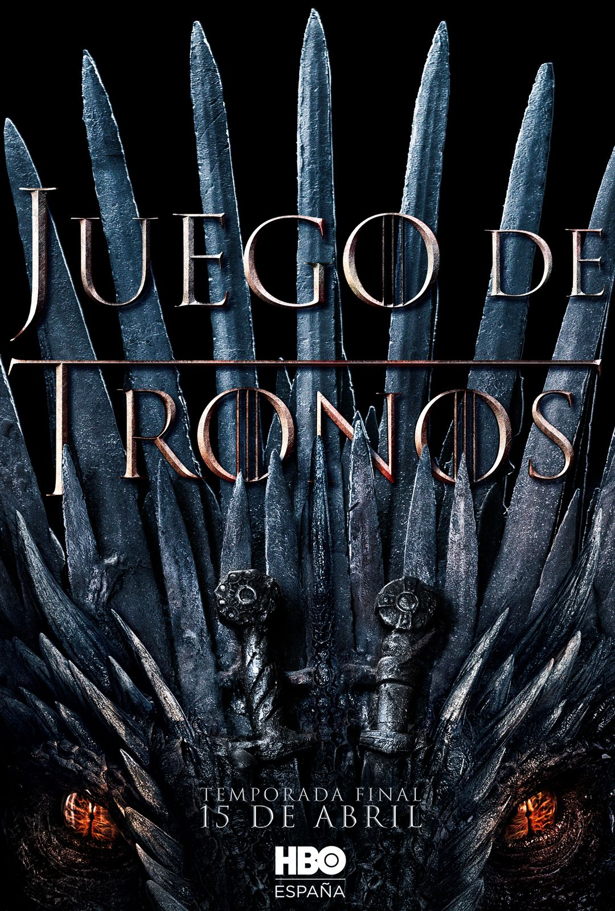

JUEGO DE TRONOS



SINAPSIS:
La trama se situa en un mundo ficticio con elementos fantásticos.DIRECTOR:David Benioff
- Dinklage = Tyrion 'The Halfman' Lannister
- Emilia Clarke = Arya Stark
- Kit Harington = Jon Snow
- Nikolaj Coster-Waldau = Sir Jaime 'Kingslayer' Lannister
- Lena Headey = Cersei Lannister
- Emilia Clarke = Daenerys Targaryen
VIKINGOS
SINAPSIS:
La serie sigue en líneas generales las hazañas del legendario jefe vikingo Ragnar Lothbrok y su tripulación, y más tarde las de sus hijos .DIRECTOR:Helen Shaver, Daniel Grou, Kari Skogland, Kelly Makin
- Travis Fimmel = Ragnar Lothbrok
- katheryn Winnick = Lagertha
- Gustaf Skarsgård = Floki
- Alexander Ludwig = bjorn Ironside
SPIDERMAN NO WAY HOME
SINAPSIS:
La identidad secreta de Peter Parker se revela al mundo entero.DIRECTOR:Jon Watts
- Tom Holland = Toni Parker
- Zendaya = Michelle Jones
- Marisa Tomei = Tia May
- Andrew Garfield = Peter Parker
- Tobey Maguire = Peter Parker
TRANSFORMERS
SINAPSIS:
Dos razas de robots extraterrestres transformables llegan a la tierra en busca de una misteriosa fuente de poder.DIRECTOR:Michael Bay
- Megane Fox = Mikaela Banes
- Shia LaBeouf = Sam Witwcikey
- John Turturro = Seymour Simmons
- Josh Duhamel = Mayor Lennox
Avatar
SINAPSIS:
Entramos en el mundo Avatar de la mano de Jake Sully, un ex-Marine en silla de ruedas, que ha sido reclutado para viajar a Pandora, donde existe un mineral raro y muy preciado que puede solucionar la crisis energética existente en la Tierra.DIRECTOR:James Cameron
- Sam Worthington =Jack Sully
- Zoe Saldaña = Neytiri Omaticaya
- Stephen Lang = Coronel Miles Quaritch
- Sigourney Weaver = Dra. Grace Augustine